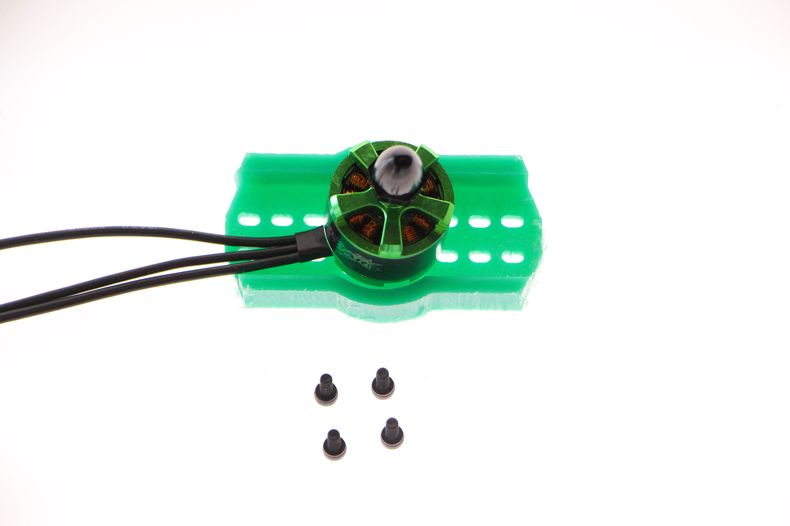

BEANS REELS 
01
02
what types of drones?
03
04
05
06
07
08
09
10
01
> > > > > > > > Part one - What is a drone?
04
> > > > > > > > Part four - the frame
05
> > > > > > > > Part five - assembling the frame
We can start assemblying the components in our frame.
06
> > > > > > > > Part six - assembling the motors

DON'T MISTMATCH THE POLARITY OF THE CONNECTIONS!
We have three wires swipping the wires between each other you can change the rotation of the motor. So if your motor rotates clockwise and you swipe two wires it will start rotating counter clockwise
CLOCKWISE ROTATION> > > COUNTER CLOCKWISE ROTATION
07
> > > > > > > > Part seven - FPV-3 "Ground Station"
08
> > > > > > > > Part eight - FPV-4 "Googles mount"
09
> > > > > > > > Part nine- "Remote hacking"
10
> > > > > > > > Let's fly! TIPS AND TRICKS
NOW IT IS TIME TO FLY!
Before flying check that all the propellers turn in the correct position and are correctly located. There is two types clockwise and counterclockwise.
TIPS AND TRICKS
> > > Depth Perception trough your new eyes
One of the hardest things to get used to when flying FPV is the height and depth of the surrounding elements now that you are starting through a security camera.
Fly around something you know well how it look alike and which size you know until you get “used to” what it looks and feels like and how it is to be 3 meters above the ground.
> > > Use a spotter
When you first start flying FPV, you need to remember that you can’t see anything around you or your quad. If you’re at the park – you might not see the small children entering the park from an entrance behind you until it is too late. Bring a friend to help you while starting to fly so he can tell you if you are to close to something.
> > >No reverse
You can’t see anything behind yourself.Suck it up cupcake.
> > >Start small
If possible, fly with experienced friends so you can “buddybox” for interactive feedback.
Don't try to race and experience high speed on the first try.
Just try to keep you quadcopter under control and know where you are.
> > > Things are fragile
Be carefull while taking off the battery of the drone don't stress to much the battery wires of you will break them.
Quadcopters breaks if you crash to much so learn to fix it!


> > > > > > > >EXTRA-EXTRA > > > KIT PARTS
All the contents are created by Eduardo Chamorro and are licensed under a Creative Commons Attribution-NonCommercial-ShareAlike 4.0 International License.